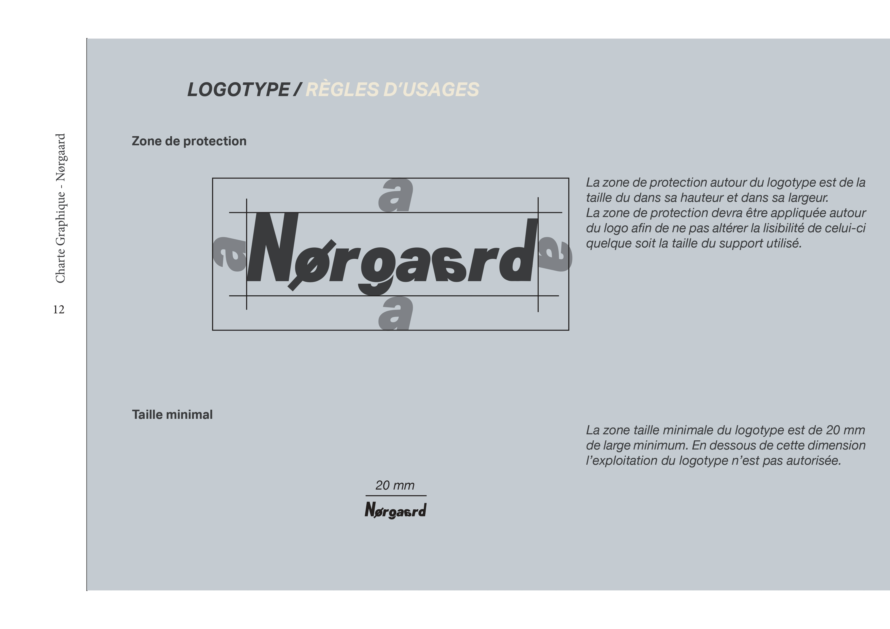
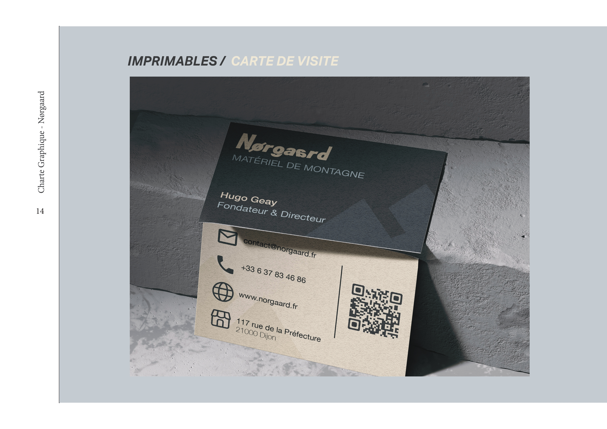
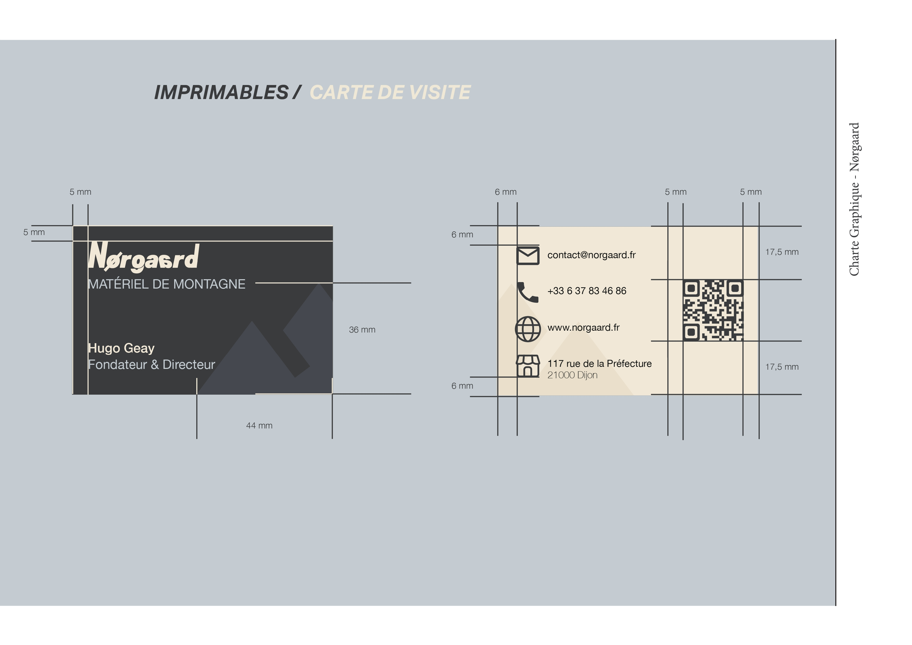

Charte graphique — Norgaard
Création d'une identité visuelle complète pour Norgaard, marque fictive spécialisée dans le matériel d'alpinisme haut de gamme. Le projet comprend un logo conçu sous Illustrator, une charte graphique détaillant typographies, palette de couleurs et règles d'usage réalisée sous InDesign, ainsi que des mockups Photoshop pour projeter l'identité sur des supports concrets.
Illustrator
InDesign
Photoshop
Identité visuelle
Commanditaire fictif



